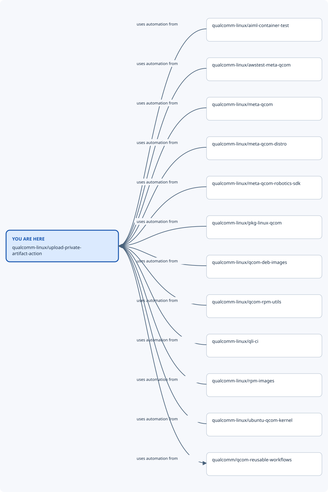

Repository map: qualcomm-linux/upload-private-artifact-action¶
You are here: qualcomm-linux/upload-private-artifact-action. This view shows recorded nearby repositories, including
both incoming and outgoing relationships. The diagram prioritises software/build
connections when present; the table also records shared automation. Dashed lines mean optional or indirect
relationships; the table states when each connection applies.

From |
Relationship |
To |
When it applies |
Evidence |
|---|---|---|---|---|
qualcomm-linux/aiml-container-test |
uses automation from |
qualcomm-linux/upload-private-artifact-action |
GitHub Actions integration at the evidence revision; workflow/action refs are specified by the calling files. This is not a runtime dependency. |
|
qualcomm-linux/awstest-meta-qcom |
uses automation from |
qualcomm-linux/upload-private-artifact-action |
GitHub Actions integration at the evidence revision; workflow/action refs are specified by the calling files. This is not a runtime dependency. |
|
qualcomm-linux/meta-qcom |
uses automation from |
qualcomm-linux/upload-private-artifact-action |
GitHub Actions integration at the evidence revision; workflow/action refs are specified by the calling files. This is not a runtime dependency. |
|
qualcomm-linux/meta-qcom-distro |
uses automation from |
qualcomm-linux/upload-private-artifact-action |
GitHub Actions integration at the evidence revision; workflow/action refs are specified by the calling files. This is not a runtime dependency. |
|
qualcomm-linux/meta-qcom-robotics-sdk |
uses automation from |
qualcomm-linux/upload-private-artifact-action |
GitHub Actions integration at the evidence revision; workflow/action refs are specified by the calling files. This is not a runtime dependency. |
|
qualcomm-linux/pkg-linux-qcom |
uses automation from |
qualcomm-linux/upload-private-artifact-action |
GitHub Actions integration at the evidence revision; workflow/action refs are specified by the calling files. This is not a runtime dependency. |
|
qualcomm-linux/qcom-deb-images |
uses automation from |
qualcomm-linux/upload-private-artifact-action |
GitHub Actions integration at the evidence revision; workflow/action refs are specified by the calling files. This is not a runtime dependency. |
|
qualcomm-linux/qcom-rpm-utils |
uses automation from |
qualcomm-linux/upload-private-artifact-action |
GitHub Actions integration at the evidence revision; workflow/action refs are specified by the calling files. This is not a runtime dependency. |
|
qualcomm-linux/qli-ci |
uses automation from |
qualcomm-linux/upload-private-artifact-action |
GitHub Actions integration at the evidence revision; workflow/action refs are specified by the calling files. This is not a runtime dependency. |
|
qualcomm-linux/rpm-images |
uses automation from |
qualcomm-linux/upload-private-artifact-action |
GitHub Actions integration at the evidence revision; workflow/action refs are specified by the calling files. This is not a runtime dependency. |
|
qualcomm-linux/ubuntu-qcom-kernel |
uses automation from |
qualcomm-linux/upload-private-artifact-action |
GitHub Actions integration at the evidence revision; workflow/action refs are specified by the calling files. This is not a runtime dependency. |
|
qualcomm-linux/upload-private-artifact-action |
uses automation from |
qualcomm/qcom-reusable-workflows |
GitHub Actions integration at the evidence revision; workflow/action refs are specified by the calling files. This is not a runtime dependency. |
Nearby repositories¶
qualcomm-linux/aiml-container-test — Container targeted at testing AI and ML workloads for Qualcomm platforms
qualcomm-linux/awstest-meta-qcom — OpenEmbedded/Yocto Project BSP layer for Qualcomm based platforms
qualcomm-linux/meta-qcom — OpenEmbedded/Yocto Project BSP layer for Qualcomm based platforms
qualcomm-linux/meta-qcom-distro — OpenEmbedded/Yocto Project Reference Distribution layer for Qualcomm based platforms
qualcomm-linux/meta-qcom-robotics-sdk — Repository purpose needs review; open the repository for its maintained documentation.
qualcomm-linux/pkg-linux-qcom — QCOM Linux Kernel Debian Package repository
qualcomm-linux/qcom-deb-images — Qualcomm Linux Debian build scripts
qualcomm-linux/qcom-rpm-utils — This repo will hold build scripts and reusable workflows for pkg rpm builds.
qualcomm-linux/qli-ci — Central location for pkg reusable workflows
qualcomm-linux/rpm-images — Repository purpose needs review; open the repository for its maintained documentation.
qualcomm-linux/ubuntu-qcom-kernel — Mirror and CI build pipeline for Canonical kernel
qualcomm-linux/upload-private-artifact-action — An action for use in qualcomm-linux projects that need to publish CI artifacts that aren’t cleared for public distribution.
qualcomm/qcom-reusable-workflows — Qualcomm reusable workflows
Full ecosystem map¶
Return to the Qualcomm repository map for the wider ecosystem, other nearby views, and the locally browsable site. Relationship claims apply to the linked evidence revisions; use release-compatible revisions for a build.
Generated from data/repositories.json (SHA-256 602a68056238817dccee9f98db5c06ea20d0bb165a53a0c23ff2d0423240dfca).
Edit the shared dataset and regenerate this view to change relationships.
Back to the ecosystem overview.
Explore qualcomm-linux/aiml-container-test.
Explore qualcomm-linux/awstest-meta-qcom.
Explore qualcomm-linux/meta-qcom.
Explore qualcomm-linux/meta-qcom-distro.
Explore qualcomm-linux/meta-qcom-robotics-sdk.
Explore qualcomm-linux/pkg-linux-qcom.
Explore qualcomm-linux/qcom-deb-images.
Explore qualcomm-linux/qcom-rpm-utils.
Explore qualcomm-linux/qli-ci.
Explore qualcomm-linux/rpm-images.